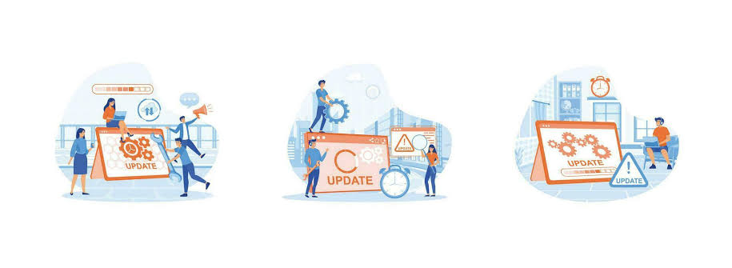

O que é Uma Atualização de Sistema?
Uma Atualização de Sistema é um conjunto de melhorias e correções lançadas pelos desenvolvedores do sistema operacional (Windows, macOS, Android, iOS, etc.). Elas servem para corrigir falhas, aumentar a segurança e trazer novos recursos.
Pergunta 1:
O que é uma Atualização de Sistema?
- Apenas uma melhoria no desempenho do sistema
- Um conjunto de melhorias e correções para melhorar a segurança e o desempenho
- Apenas a correção de falhas no sistema
Por Que Atualizar o Sistema?
- Segurança: As atualizações corrigem falhas que podem ser exploradas por hackers.
- Desempenho: Melhoram a velocidade e estabilidade do sistema.
- Compatibilidade: Permitem que novos programas e aplicativos funcionem corretamente.
- Novos recursos: Adicionam ferramentas úteis e melhoram a experiência do usuário.
Pergunta 2:
Por que é importante Atualizar o Sistema?
- Para adicionar novos recursos, apenas
- Para melhorar a segurança, desempenho e compatibilidade
- Apenas para corrigir falhas do sistema
Tipos de Atualização
- Atualizações de segurança: Feitas para corrigir vulnerabilidades e proteger seus dados.
- Atualizações de desempenho: Melhoram a velocidade e corrigem erros no sistema.
- Atualizações de recursos: Introduzem novas funções e melhorias na interface.
- Atualizações automáticas: Algumas atualizações são instaladas sem intervenção do usuário.
Pergunta 3:
Quais são os principais tipos de Atualizações?
- Apenas atualizações de recursos
- Atualizações de segurança, desempenho e recursos
- Apenas atualizações automáticas
Como Atualizar Seu Sistema?
- Verifique se há Atualizações disponíveis
- No Windows:
Acesse Configurações > Atualização e Segurança > Windows Update.
- No macOS:
Vá para Preferências do Sistema > Atualização de Software.
- No Android:
Acesse Configurações > Sistema > Atualizações de Software.
- No iOS:
Vá em Ajustes > Geral > Atualização de Software.
- No Windows:
- Faça backup antes de atualizar
Antes de instalar uma Atualização importante, faça um backup dos seus arquivos para evitar perdas.
- Conecte o dispositivo a uma rede estável
As Atualizações podem ser grandes e consumir muitos dados, então use uma conexão Wi-Fi confiável.
- Reinicie o dispositivo após a atualização
Depois de instalar, reinicie o sistema para garantir que as mudanças sejam aplicadas corretamente.
Pergunta 4:
Quais passos são necessários antes de Atualizar seu Sistema?
- Apenas verificar atualizações
- Verificar atualizações, fazer backup e usar uma rede estável
- Apenas conectar à internet e atualizar
Com Que Frequência Devo Atualizar?
- Atualizações de segurança: Sempre que forem lançadas.
- Atualizações de desempenho: Conforme necessário para evitar falhas e lentidão.
- Grandes atualizações do sistema: Após garantir que são estáveis e compatíveis com seus programas.
Pergunta 5:
Com que frequência devo Atualizar o Sistema?
- Somente quando houver problemas no sistema
- Sempre que houver atualizações de segurança ou desempenho
- Nunca, pois o sistema sempre estará seguro sem atualizações
Conclusão
Manter o Sistema Atualizado é essencial para garantir segurança, desempenho e compatibilidade com novas tecnologias. Reserve um tempo para verificar e instalar as atualizações regularmente!